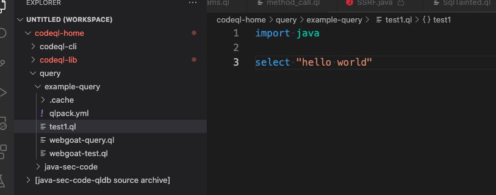
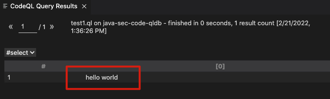
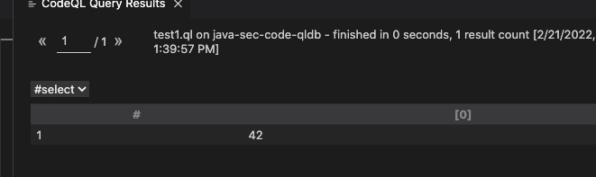
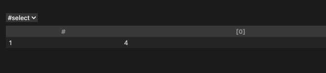
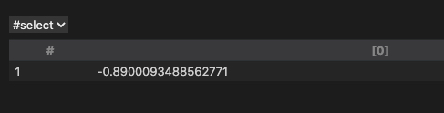
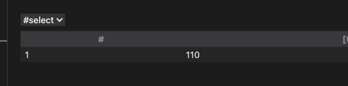
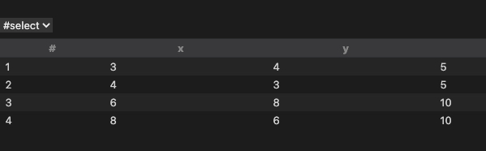

南有乔木，不可休思；汉有游女，不可求思。
——《诗经.汉广》
编写CodeQL查询语句（翻译混乱，仅供自己参考）
CodeQL查询用于分析与安全性、正确性、可维护性和可读性相关的代码问题。
概述
CodeQL已经包含了很多有用的查询语句，我们还可以编写自己的查询语句。重要的查询类型有:
告警查询: 查询代码特定位置的问题
路径查询: 查询sink和source的问题
基础查询结构
CodeQL查询语句文件后缀为.ql，包含一个select语句。一般结构如下
1 | /** |
查询元数据
将查询添加到开源仓库、添加到LGTM、使用CodeQL CLI，元数据需要加上@kind。@kind指示如何显示和解释查询结果。
- 告警查询需要添加
@kind problem将结果展示为简单告警。 - 路径查询需要添加
@kind path-problem才能将结果展示为一些列告警组成的序列 - 诊断查询 需要添加@kind diagnostic, 将结果确定为有关提取过程的故障排除数据
- 摘要查询需要添加@kind metric
and@tags summary,将结果确定为CodeQL数据库的摘要指标
导入语句
每一个查询包含一个或者更多import语句，用来定义库和模块。
当编写一个你自己的告警语句，你应该导入对应语言的标准库
- C/C++:
cpp - C#:
csharp - Go:
go - Java:
java - JavaScript/TypeScript:
javascript - Python:
python
有一些库包含一些常用的谓词，类型，和其他模块。包括数据流、控制流、和污点追踪。为了计算代码路径，路径查询需要导入数据流库，可以在 CodeQL library reference documentation 或者 GitHub repository.浏览标准库内容。
可选的类和谓词
通过在查询中定义自己的谓词和类，可以自定义分析。
from 子句
from子句声明查询中使用的变量。每个声明按此格式： <type> <variable name>。
Where 子句
where字句定义了逻辑条件，该字句使用聚合、谓词、和逻辑公式将结果限制在复合规定条件的较小的范围内。CodeQL将特定语言或者框架的谓词分组。如上所述，您还可以在查询文件体或自定义模块中定义自己的谓词。
Select 字句
select字句用来显示复合where条件的结果，select子句的有效结构由元数据的的@kind指定。
select子句的告警查询由两个字段组成：
1 | select element, string |
- element: 由查询标识的代码元素，用于定义警报的显示位置
- string： 一条消息，其中还可以包含链接和占位符，解释生成警报的原因。
可以修改select语句最后一列中定义的警报消息，以使用链接和占位符提供有关查询找到的警报或路径的更多详细信息。
select子句的路径查询(@kind path-problem)包含告警信息和路径关联图。
select子句对应诊断查询(@kind diagnostic)和summary metric queries@kind metric and @tags summary) ，有不同的要求
查看标准CodeQL查询
开始编写自己的查询的最简单方法之一是修改现有查询。要查看标准的CodeQL查询，或尝试其他示例，请访问GitHub上的CodeQL和 CodeQL for Go 仓库。
还可以在GitHub Security Lab website 网站和相关仓库中找到为查找开源软件项目中的安全漏洞和漏洞而开发的示例 repository。
贡献查询语句
如果你贡献了查询给开源仓库，写了一个查询给LGTM，或者自己写了查询用于codeql cli。之后需要添加额外的元数据确保显示结果正确。
元数据
元数据（Metadata）作为QLDoc注释的内容包含在每个查询文件的顶部。元数据定义如何处理查询并正确显示其结果。它还向其他用户提供有关查询结果含义的信息。更多信息 query metadata style guide
元数据属性
| Property | Value | Description |
|---|---|---|
@description |
<text> |
A sentence or short paragraph to describe the purpose of the query and why the result is useful or important. The description is written in plain text, and uses single quotes (') to enclose code elements. |
@id |
<text> |
A sequence of words composed of lowercase letters or digits, delimited by / or -, identifying and classifying the query. Each query must have a unique ID. To ensure this, it may be helpful to use a fixed structure for each ID. For example, the standard LGTM queries have the following format: <language>/<brief-description>. |
@kind |
problem``path-problem |
Identifies the query is an alert (@kind problem) or a path (@kind path-problem). For more information on these query types, see “About CodeQL queries.” |
@name |
<text> |
A statement that defines the label of the query. The name is written in plain text, and uses single quotes (') to enclose code elements. |
@tags |
correctnessmaintainabilityreadabilitysecurity |
These tags group queries together in broad categories to make it easier to search for them and identify them. In addition to the common tags listed here, there are also a number of more specific categories. For more information, see the Query metadata style guide. |
@precision |
lowmediumhighvery-high |
Indicates the percentage of query results that are true positives (as opposed to false positive results). This, along with the @problem.severity property, determines whether the results are displayed by default on LGTM. |
@problem.severity |
errorwarningrecommendation |
Defines the level of severity of any alerts generated by a non-security query. This, along with the @precision property, determines whether the results are displayed by default on LGTM. |
@security-severity |
<score> |
Defines the level of severity, between 0.0 and 10.0, for queries with @tags security. For more information about calculating @security-severity, see the GitHub changelog. |
案例

查询帮助文件
查询帮助文件告诉用户查询的目的，并建议如何解决查询发现的潜在问题。
查询帮助文件使用自定义XML格式编写，保存到 .qhelp 后缀的文件，查询帮助文件的基本名称必须与其描述的查询相同，跟查询文件位于同一目录，基本结构如下
1 |
|
标题和qhelp元素都是必需的，查看的时候可以转为markdown格式。
节点元素
| Element | Attributes | Children | Purpose of section |
|---|---|---|---|
example |
None | Any block element | Demonstrate an example of code that violates the rule implemented by the query with guidance on how to fix it. Default heading. |
fragment |
None | Any block element | See “Query help inclusion” below. No heading. |
hr |
None | None | A horizontal rule. No heading. |
include |
src The query help file to include. |
None | Include a query help file at the location of this element. See “Query help inclusion” below. No heading. |
overview |
None | Any block element | Overview of the purpose of the query. Typically this is the first section in a query document. No heading. |
recommendation |
None | Any block element | Recommend how to address any alerts that this query identifies. Default heading. |
references |
None | li elements |
Reference list. Typically this is the last section in a query document. Default heading. |
section |
title Title of the section |
Any block element | General-purpose section with a heading defined by the title attribute. |
semmleNotes |
None | Any block element | Implementation notes about the query. This section is used only for queries that implement a rule defined by a third party. Default heading. |
块元素
下面的元素是section, example, fragment, recommendation, overview, and semmleNotes` 的子元素
| Element | Attributes | Children | Purpose of block |
|---|---|---|---|
blockquote |
None | Any block element | Display a quoted paragraph. |
img |
src The image file to include.alt Text for the image’s alt text.height Optional, height of the image.width Optional, the width of the image. |
None | Display an image. The content of the image is in a separate image file. |
include |
src The query help file to include. |
None | Include a query help file at the location of this element. See Query help inclusion below for more information. |
ol |
None | li |
Display an ordered list. See List elements below. |
p |
None | Any inline content | Display a paragraph, used as in HTML files. |
pre |
None | Text | Display text in a monospaced font with preformatted whitespace. |
sample |
language The language of the in-line code sample.src Optional, the file containing the sample code. |
Text | Display sample code either defined as nested text in the sample element or defined in the src file specified. When src is specified, the language is inferred from the file extension. If src is omitted, then language must be provided and the sample code provided as nested text. |
table |
None | tbody |
Display a table. See Tables below. |
ul |
None | li |
Display an unordered list. See List elements below. |
warning |
None | Text | Display a warning that will be displayed very visibly on the resulting page. Such warnings are sometimes used on queries that are known to have low precision for many code bases; such queries are often disabled by default. |
列元素
ul and ol
表元素
| Element | Attributes | Children | Purpose |
|---|---|---|---|
tbody |
None | tr |
Defines the top-level element of a table. |
tr |
None | th``td |
Defines one row of a table. |
td |
None | Any inline content | Defines one cell of a table row. |
th |
None | Any inline content | Defines one header cell of a table row. |
内联元素
| Element | Attributes | Children | Purpose |
|---|---|---|---|
a |
href The URL of the link. |
text | Defines hyperlink. When a user selects the child text, they will be redirected to the given URL. |
b |
None | Inline content | Defines content that should be displayed as bold face. |
code |
None | Inline content | Defines content representing code. It is typically shown in a monospace font. |
em |
None | Inline content | Defines content that should be emphasized, typically by italicizing it. |
i |
None | Inline content | Defines content that should be displayed as italics. |
img |
src``alt``height``width |
None | Display an image. See the description above in Block elements. |
strong |
None | Inline content | Defines content that should be rendered more strongly, typically using bold face. |
sub |
None | Inline content | Defines content that should be rendered as subscript. |
sup |
None | Inline content | Defines content that should be rendered as superscript. |
tt |
None | Inline content | Defines content that should be displayed with a monospace font. |
定义查询结果
可以通过修改源码中的select语句来控制结果的展示。在vscode插件上编写没有限制，但是如果在LGTM或者用codeql cli生成有效的结果，需要按格式编写select语句。
一般来说，select语句需要包含两个字段：
- Element：元素
- String：自定义字符串
基础select语句
1 | import java |
包含两个基本的元素
Elment: f
String：This file is similar to another file.
占位符
占位符：$@
占位符由后面两位替换。
比如:
1 | select f, "This file is similar to $@.", other, other.getBaseName() |
查询语句
模板
1 | /** |
DataFlow::Pathgraph需要导入的标准库
sourceandsink都是污点分析必要的MyConfiguration是一个包含谓词的类，定义了source和sink之间的数据流
路径查询元数据
路径查询元数据必须包含@kind path-problem，其他的根据情况而定。
生成路径解释
为了生成路径解释，查询需要计算路径传播。这就得定义一个叫edges的断言。这个谓词定义计算的图的边关系。
1 | import DataFlow::PathGraph |
这个语句从数据流库（DataFlow.qll）中导入了PathGraph模块，这里面定义了edges
定义自己的edges断言
1 | query predicate edges(PathNode a, PathNode b) { |
声明sources和sinks
必须提供source 和 sink，在from子句中声明。
定义流的条件
where子句中定义逻辑条件。当编写路径查询的时候，通常定义一个在source和sink之间生效的谓词
1 | where config.hasFlowPath(source, sink) |
必须使用 hasFlowPath 断言。
Select子句
路径查询包含四个字段。
1 | select element, source, sink, string |
元素和字符串列分别表示警报和警报消息的位置
数据流Debug
如果一个数据流查询没有看到预期的结果，可以使用“partial flow ”来debug。按照如下方式进行。
最简单的方式就是使用codeql vscode的quick evaluation。
Introduction to QL
1. 第一个用例
1 | import java |

运行结果：

增加一下复杂度
1 | import java |
运行结果

2. 基本的运算
2.1 获取字符串长度
1 | import java |
结果：

2.2 多种数学运算符
1 | import java |
结果：

2.3 日期运行
1 | from date start, date end |
结果：

3. 查询多个结果
1 | from int x, int y, int z |
结果：

4. 不同语言的查询
- python
1 | import python |
python，查询超过7个参数的函数
可以在https://lgtm.com/query/2096810474/运行
- javascript
1 | import javascript |
获取注释中有TODO
- java
1 | import java |
查找未使用的参数
Find the thief
| Question | Answer | |
|---|---|---|
| 1 | Is the thief taller than 150 cm? | yes |
| 2 | Does the thief have blond hair? | no |
| 3 | Is the thief bald? | no |
| 4 | Is the thief younger than 30? | no |
| 5 | Does the thief live east of the castle? | yes |
| 6 | Does the thief have black or brown hair? | yes |
| 7 | Is the thief taller than 180cm and shorter than 190cm? | no |
| 8 | Is the thief the oldest person in the village? | no |
| 9 | Is the thief the tallest person in the village? | no |
| 10 | Is the thief shorter than the average villager? | yes |
| 11 | Is the thief the oldest person in the eastern part of the village? | yes |
1 | import tutorial |
Catch the fire starter
1 | import tutorial |
Crown the rightful heir
1 | import tutorial |
Cross the river
1 | /** |